Wireless Communication
Lance Hartung
Radio
Radio waves are all around us and very useful.
- Phones and tablets (WiFi, 5G)
- Satellites (Starlink)
- Weather radars
- Microwave ovens
They are invisible, so how do we study them?
Sound Analogy
How do we send information using radio?
We can think of radio waves like sound.
-
Changing notes
-
Changing volume
-
Together with rhythm, creates music
Waves
Sound and radio both behave like waves.
Imagine throwing a rock into a lake...
Properties of Waves
Waves have two important properties.
-
Length / Frequency
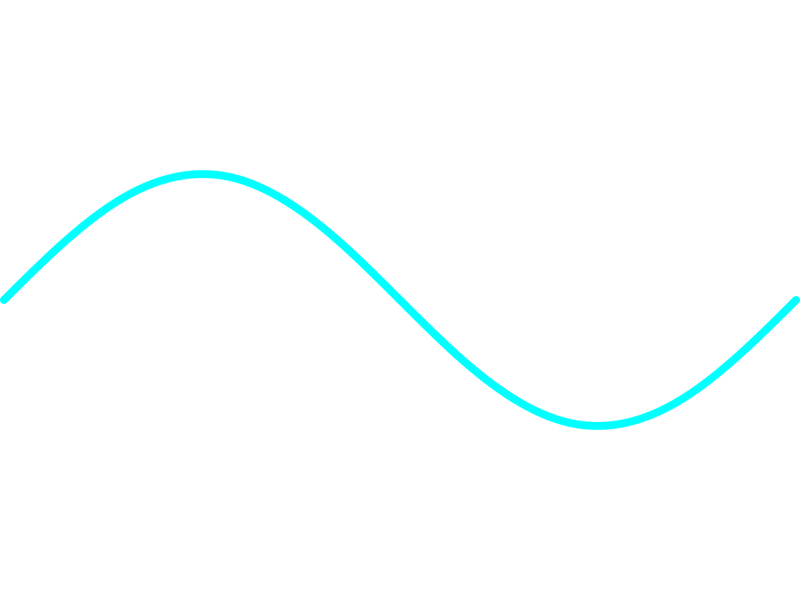
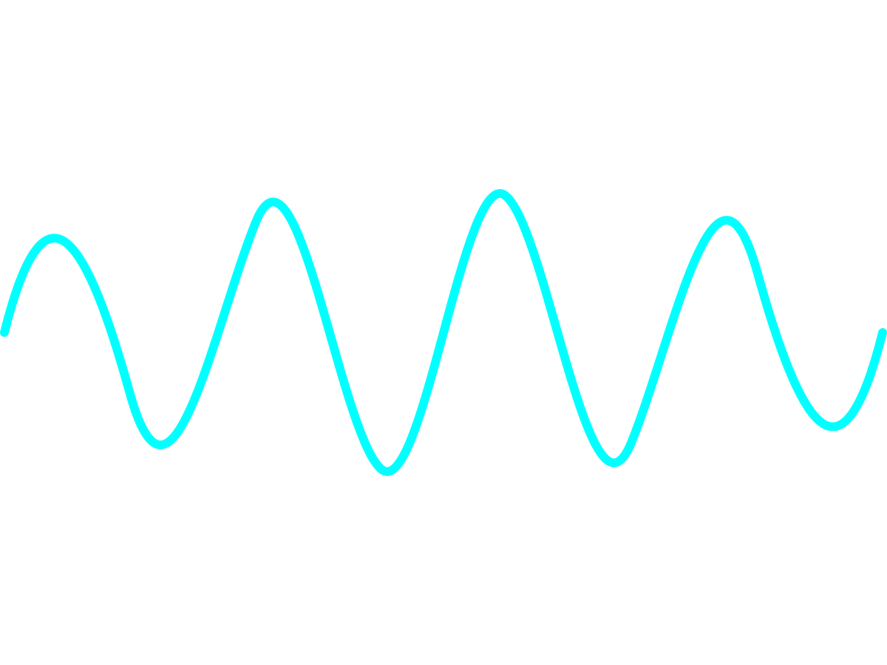
-
Amplitude
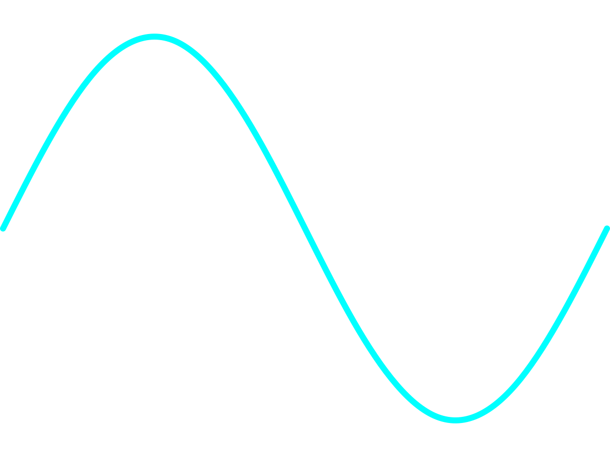
As with music, we can use these to send information!
Antennas
How do we transmit information?
For sound, we use speakers and microphones.
For radio, we use antennas.
There are many kinds of antennas.
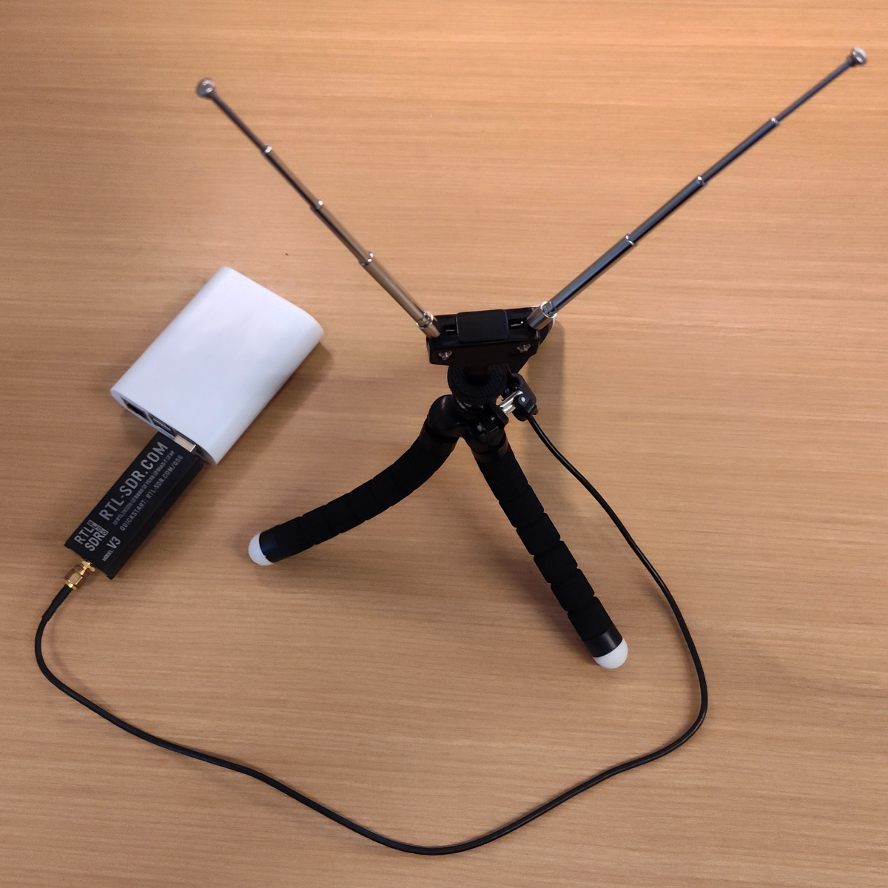


Key: antenna size is related to wave length / frequency.
WiFi uses a wavelength ~5-12cm, FM Radio is ~3m.
Transmission
How do antennas work?
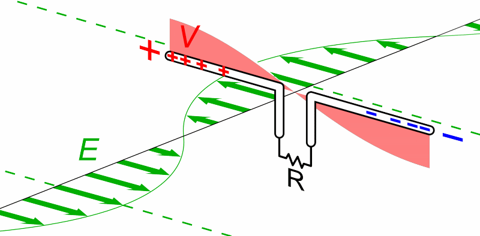
Sending: electricity moving → radio waves.
Receiving: radio waves → electricity in an antenna.
Learn more: circuits and electrical engineering.
Interference
Radio can interfere with each other.
What happens if everyone in the classroom is talking?
Solutions to prevent interference in wireless:
-
Taking turns (raising your hand)
-
Adjust power (whispering)
-
Different frequencies
The FCC makes rules to keep radio orderly and fair.
Tutorials
Pipelines
We will use some special blocks in Scratch to create data pipelines.
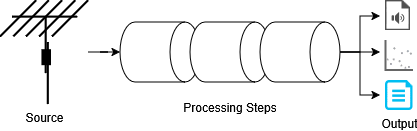
Series of processing steps that change data and pass it to the next step.
Activity 1 - Waterfall
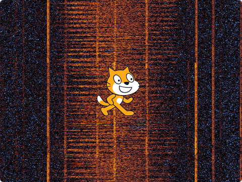
In this activity, you will look at radio data using a waterfall graph!
Data Source
Add a source block from the menu.
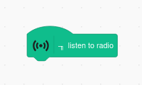
This is a special block that begins a radio pipeline.
The ╖ symbol means it passes data to the next block.
Calculation Step
Add a calculation block - calculate power density.
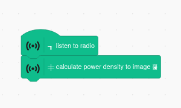
The ╪ symbol means it converts radio data into another form.
You can only have one ╪ block in each pipeline.
Output Step
Add an output block - output waterfall.
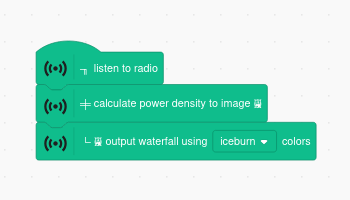
The └ symbol means it produces output.
You can only have one └ block in each pipeline.
You can try different color schemes from the dropdown menu.
Controlling the Radio
Add an event block - when clicked from the menu.
Code blocks placed here will run after you click .
We will add blocks here to control the radio.
Starting the Radio
Add a start radio block.
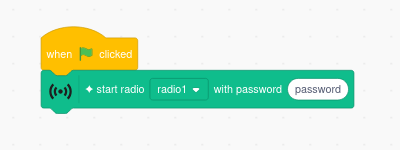
Check your handout for the correct radio name and password.
Tuning the Radio
Add a tuning block.
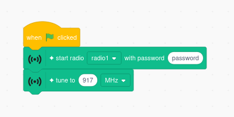
This block tunes the radio to a particular frequency.
- 98.1 MHz - FM radio station
- 855 MHz - Cellular LTE
- 917 MHz - LoRa chirps
Check Your Code
Your code should look similar to this.
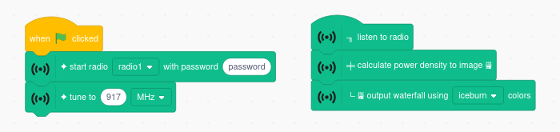
Maybe you chose a different frequency or color scheme.
Running Your Code
Click to run your code.
If everything works, you should see an image appear behind Scratch.
Try some other frequencies - what do you notice?
Try adding "set gain" block with different values - what happens to the image?
Note: it is best to click before changing your code.
Advanced Code
Try using other Scratch blocks such as the "pick random" block."
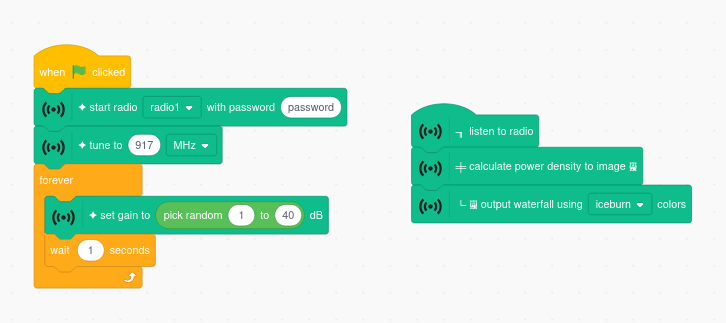
Example: you could randomly change the gain and see what happens.
Activity 2 - LoRa
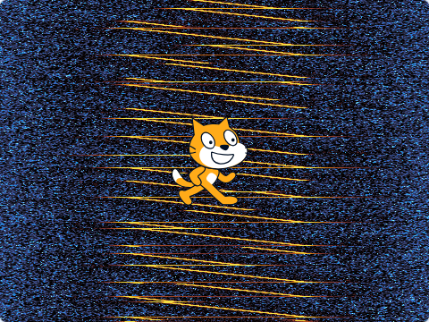
LoRa is a Long Range radio communication technology
It is used for sensors, factory automation, and scientific measurements.
In this activity, you will decode a secret message!
Data Source
Add a new source block from the menu.
You can leave your existing waterfall pipeline and start a new pipeline.
Calculation Step
Add a LoRa demodulation block from the menu.
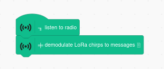
This block decodes LoRa chirps into text.
Output Step
Add an output block - output text.
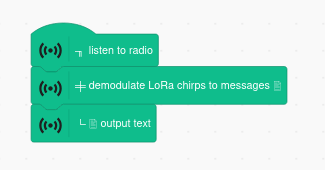
This block causes Scratch to say the decoded messages.
Tuning the Radio
Change or replace your existing tuning block.
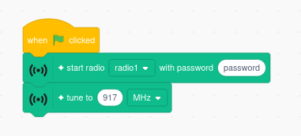
Make sure it is set to 917 MHz.
Check Your Code
Your code should look similar to this.
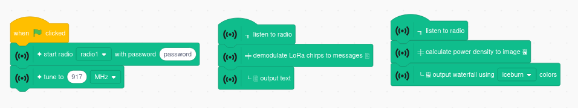
Running Your Code
Click to run your code.
If everything works, you should see chirps (diagonal lines) in the waterfall.
Scratch should have a message for you? What does he say?
Write the secret code on your handout.
Activity 3 - Audio
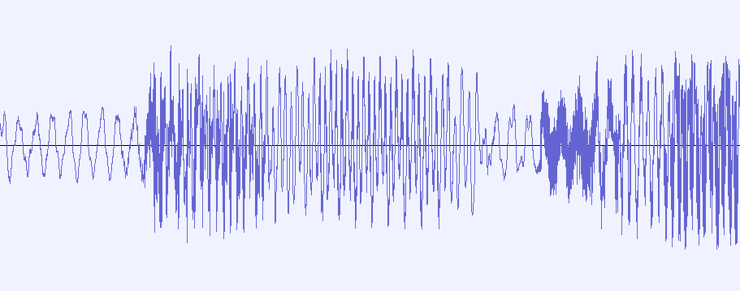
In this activity, you will use radio to listen to music!
Data Source
Add a new source block from the menu.

You can leave your existing waterfall pipeline in place.
You can delete your LoRa decoding pipeline.
Filter Step
Add a noise filter block.
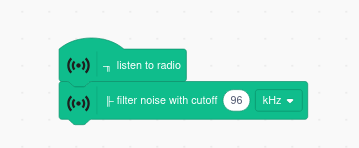
Filtering is important for good sound quality.
You can experiment with different values between 1 and 150.
Demodulation Step
Add a demodulation block - FM to audio
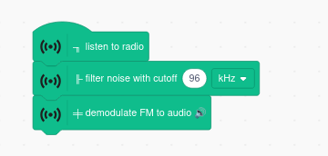
This converts the radio signal to an audio signal.
Multiply Step
Add a multiply block
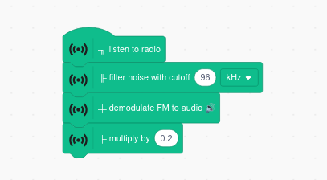
Multiplication on the audio signal adjusts the volume.
You can experiment with different values such as 0.1 and 0.5.
Output Step
Add an output block - output audio.
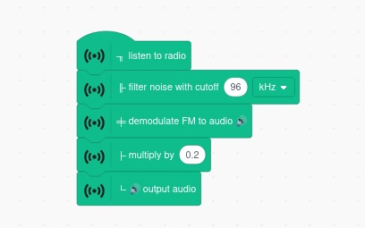
This will play the decoded audio on your laptop speaker.
Tuning the Radio
Change or replace your tuning block.
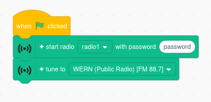
There is a tuning block with known radio stations.
You can also enter frequencies in the numeric tuner.
- 89.9 MHz - Public radio
- 98.1 MHz - Variety music
- 162.55 MHz - Weather broadcast
Setting the Gain
Add a set gain block.
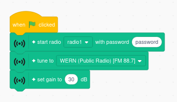
The gain amplifies the received signal (and noise).
Some FM stations are strong - less gain is needed (20-30 dB).
Some are far away or weak - more gain is needed (30-40 dB).
Check Your Code
Your code should look similar to this.
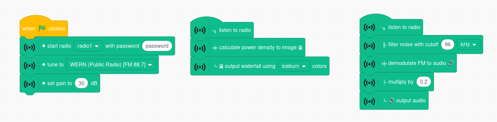
Running Your Code
Click to run your code.
If everything works, you should hear something from the speakers.
Try different frequencies using the tuner.
Try changing the filter size or the multiplier value. What happens?
Try adding a filter to your waterfall pipeline to see what it does.
Learning about Filters
Try adding a filter block to your existing waterfall pipeline.
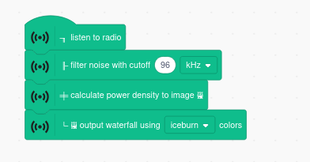
You can see what the filter does to the radio signal.
Advanced Code
Try using some other blocks such as reading position of Scratch.
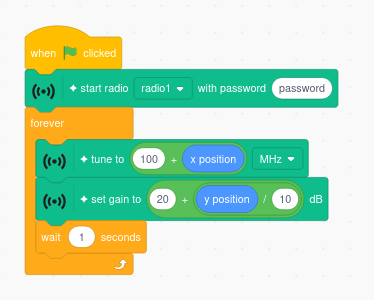
You could use the position of Scratch to set the frequency and gain.
Wrap-Up
Our Sensors
These are the sensors you used for the activity.
- Raspberry Pi
- RTL-SDR (www.rtl-sdr.com)
- Dipole Antenna
Going Beyond Scratch
Wireless researchers use a tool called gnuradio.
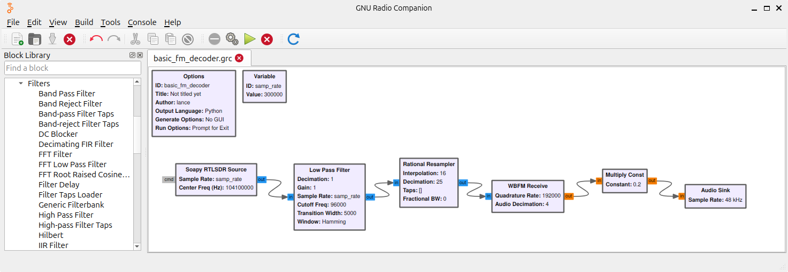
This is the pipeline to decode FM radio.
Does it look familiar?
Research - Health
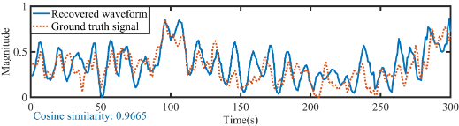
Radar - radio detection and ranging.
Can be used to detect vital signs (breathing & heart)
Research - SpecScape
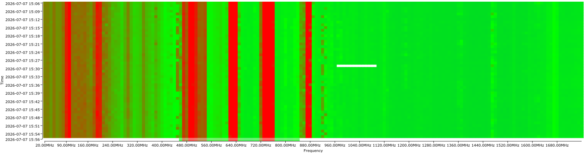
Radio spectrum is a valuable resource.
Deploy sensors around the country to understand how it is being used.
Block Library
| Block | Description |
|---|---|
| Use this to connect to the radio on your handout. You should have one of these in your program. | |
| Use this to tune the radio to a channel by name. | |
| Use this to tune the radio to a given frequency. | |
| Use this to set the radio gain. Use higher gains (30-40) to amplify weak signals. | |
| Use this block to start a new data pipeline. You can have more than one of these in your program. | |
| Use this to reduce noise in your signal, especially for audio decoding. Try values between 1 and 150 and see how it affects your signal. | |
| Use this to convert your radio signal to audio. You should only have one ╪ block in each pipeline. | |
| Use this to calculate power levels, which you can then view as a waterfall. You should only have one ╪ block in each pipeline. | |
| Use this to convert a LoRa signal into text messages. You should only have one ╪ block in each pipeline. | |
| Use this to multiply a signal by some amount. You can use this to adjust the volume of an audio signal. | |
| Use this to output an audio signal to your laptop speakers. You can only have one output block in each pipeline. | |
| Use this to display the waterfall from a power density calculation. You can only have one output block in each pipeline. | |
| Use this to output text - Scratch will say the message. You can only have one output block in each pipeline. |